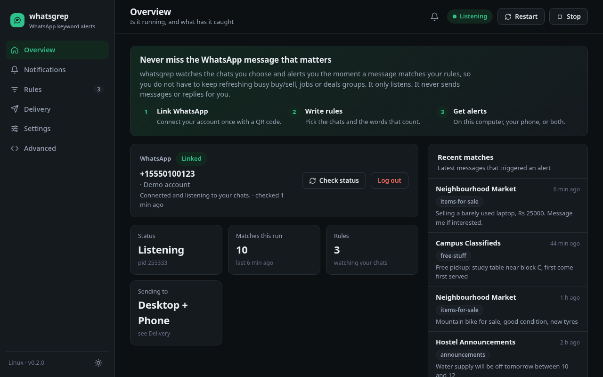

Never miss the message that matters.
whatsgrep watches the WhatsApp chats you choose and alerts you the moment a message matches your rules.
The problem
Busy groups bury the one message you wanted.
Buy and sell groups, job boards, deal channels. You refresh them all day, just in case.
How it works
Three steps. Then forget about it.
Scan one QR code, the same way you link WhatsApp Web.
Choose the chats and the words that count. Test them as you type.
A desktop notification, a phone push, or both, the moment it matches.
Rules
Say what you want in plain words.
Whole words, partial words or patterns. Require some words, skip others.
The interface
Everything in one clear screen.
No config files to edit. Rules, chats, alerts and history, all in your browser.

Alerts
Told where you are.
On your computer, on your phone, or both. Every match is kept in a searchable history.
Private by design
It only listens.
Runs on your machine and starts at login. Nothing goes to a server of ours, and it never sends a message.
Free. Open source. Yours.
One file for Windows, macOS and Linux. No installer.